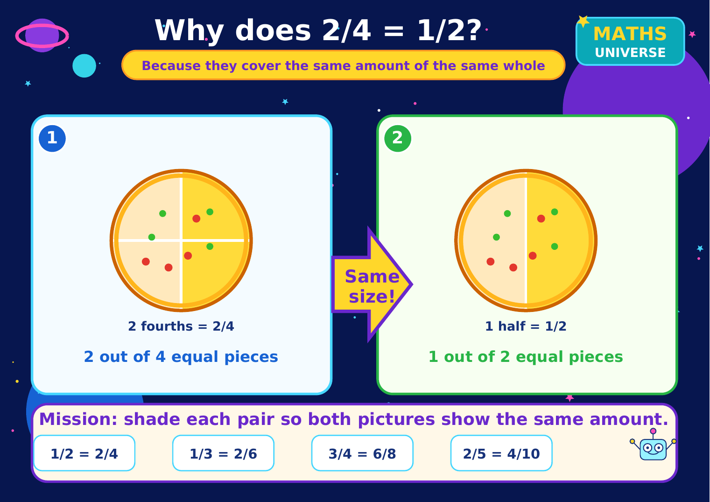
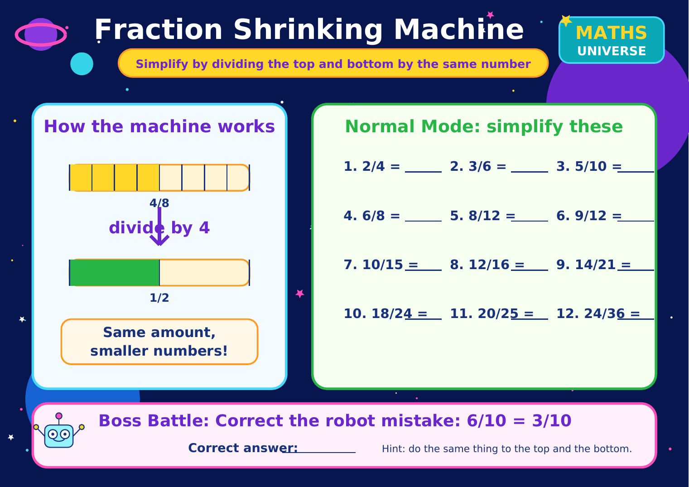
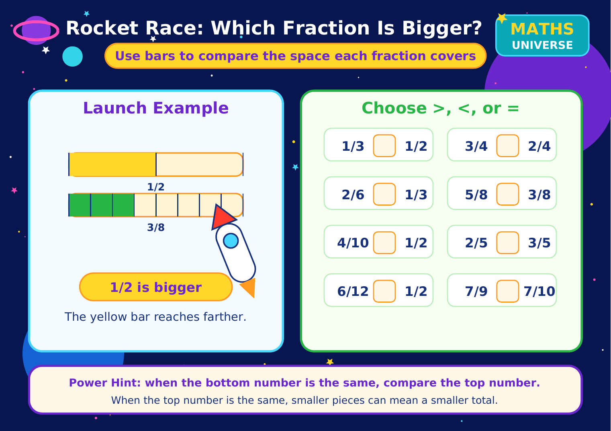
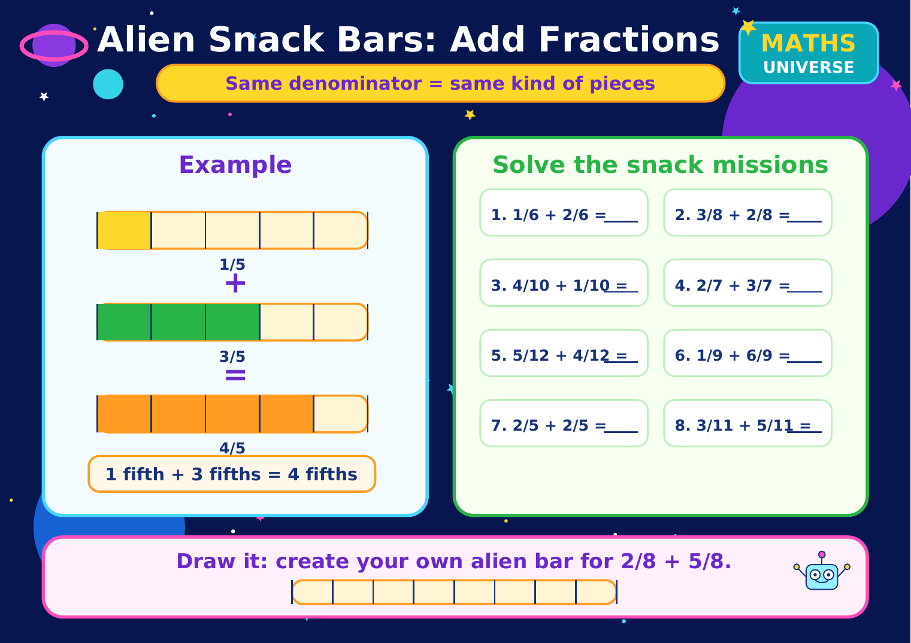
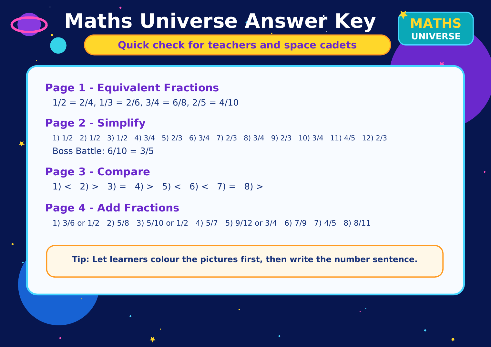

1. Equivalent Fractions
Shade each pair so both pictures show the same amount.
A colourful printable pack for equivalent fractions, simplifying, comparing, and adding fractions. Page 5 includes the answer key.
Learners can colour, compare, simplify, and add fractions using the same space theme as the website.

Shade each pair so both pictures show the same amount.

Simplify by dividing the top and bottom by the same number.

Use bars to compare which fraction is bigger.

Add fractions with the same denominator.

Quick check for teachers and space cadets.
This pack is best used after the Fractions lesson or as a printable support task before the fractions quiz. Learners should colour the pictures first, then write the number sentence.